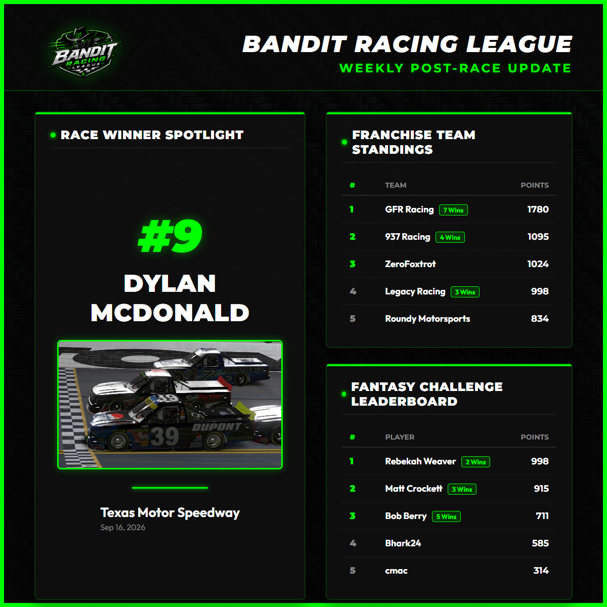

Race Update: Kevin Foster drove a masterclass at the Tricky Triangle, leading 21 laps to capture the victory. GFR Racing teammate Nick Nickerson finished a close 2nd to seal a GFR 1-2 sweep, while Eddie Hagigh completed the podium in 3rd.
Week six of the Bandit Racing League Season 16 brought the Craftsman Trucks to the challenging three-turn design of Pocono Raceway. In a race defined by high-speed draft battles and caution flags that shuffled the field, Kevin Foster piloted his GFR Racing Ford F150 #8 to a brilliant win.
The story of the first half of the race was pole-sitter Adam Tahan (Young Gunz Motorsports). Tahan was dominant early, leading a race-high 37 laps and demonstrating impressive speed. However, late-race caution periods and strategic restarts shook up the running order. Under yellow flag cycles, GFR Racing's track position strategies paid off beautifully.
Kevin Foster took the lead late, pacing the field for 21 laps. Teammate Nick Nickerson followed him through the draft, and the GFR duo managed the closing laps to secure a spectacular 1-2 finish for GFR Racing. Eddie Hagigh (Carter Phillips Racing) had an outstanding run, dodging the chaos to claim a well-deserved 3rd-place podium.

Tahan Leads Laps but Falls to 4th
Despite his early dominance, Adam Tahan crossed the line in 4th place after the final restart shuffles. Tahan showed he has the speed to run at the front, but track position on the final restarts favored the GFR drafting partners. Dylan McDonald (Legacy Racing) rounded out the top 5 with a strong, clean performance.
In the overall Driver Championship, Scott Sanderson maintains a slim lead with 202 points, followed closely by GFR Racing's Johnathon Platt at 197 points. Benjamin Lacy stands 3rd with 181 points, making it an extremely tight battle heading into week seven.
ZeroFoxtrot and GFR Racing Separate from the Field
In the Franchise Standings, ZeroFoxtrot maintains the overall lead with 933 points. However, GFR Racing is lurking just behind at 903 points with a league-high 4 wins. Legacy Racing follows in 3rd place with 624 points.
Next week, the series travels to the short-track action of Richmond Raceway. With only one fast repair and Stage breaks on the horizon, drivers will need to stay out of trouble on the tight oval!